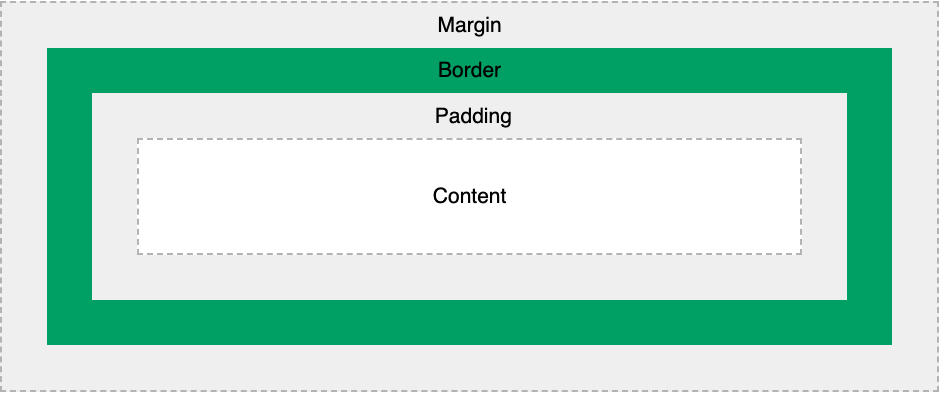

Margin, Border and Padding
20 November 2021
We should have this picture in mind every time that it is necessary to use CSS. This tool will be essential to display the desired design and layout on your page. Think about it as being different boxes around the content forming a block for each element of your HTML file. I will include the concept and an analogy considering a Microsoft Word table in a file.
- Padding: the space between the content and the border. It is usually transparent. Compared to the table, it is the clear space around the content. Coloured in pink below for better understanding.
- Border: goes around the padding and the content. You can use different shapes or colours to show it. It is the solid border on our table.
- Margin: area outside the border. It is usually also transparent. You can reposition it with the Word’s ruler.
Each one of the concepts above can be shaped to fit the dimensions desired. The model is responsible for positioning your element related to other subs on the page - using CSS language.